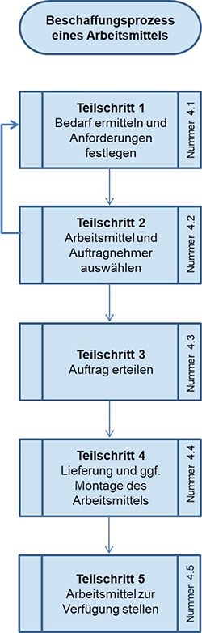
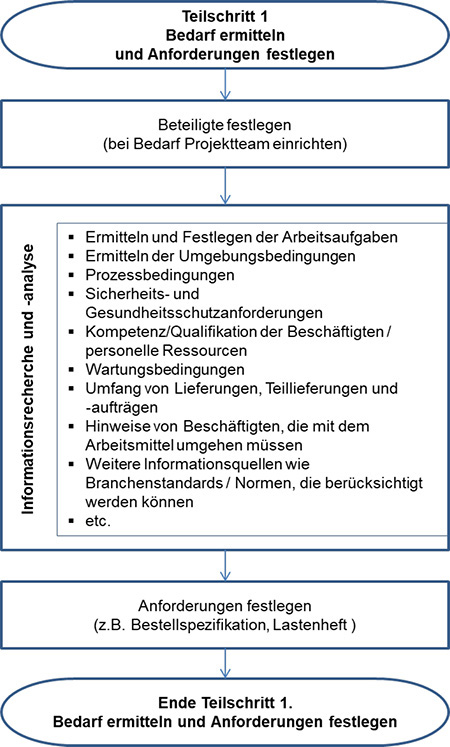
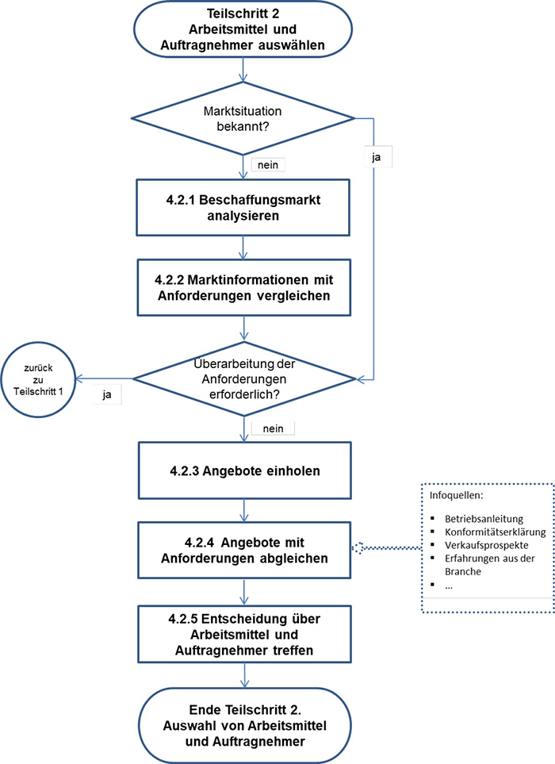
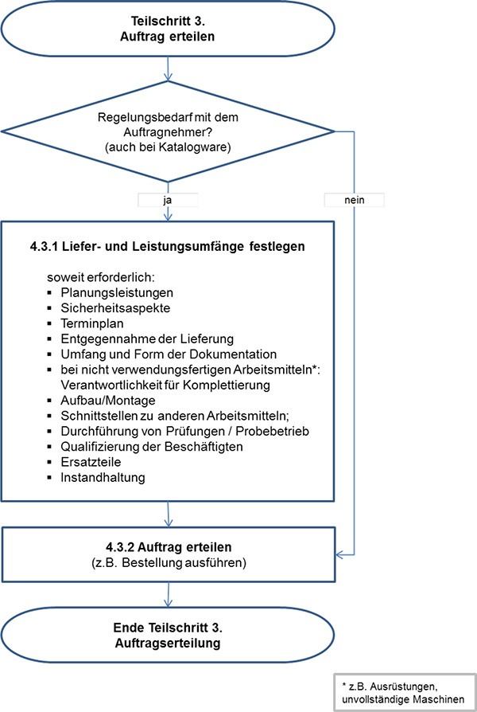
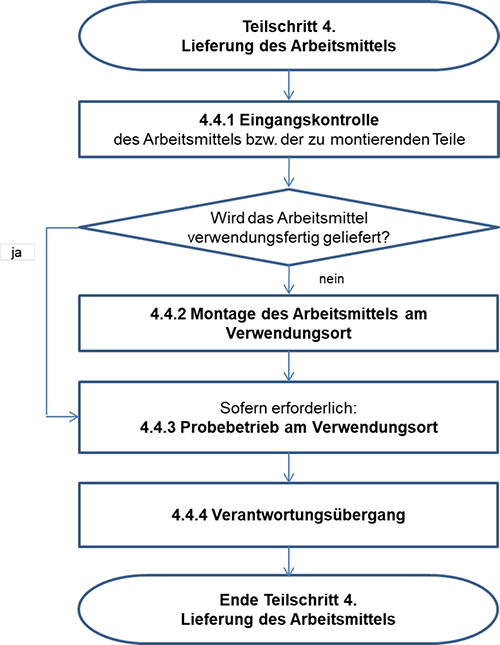
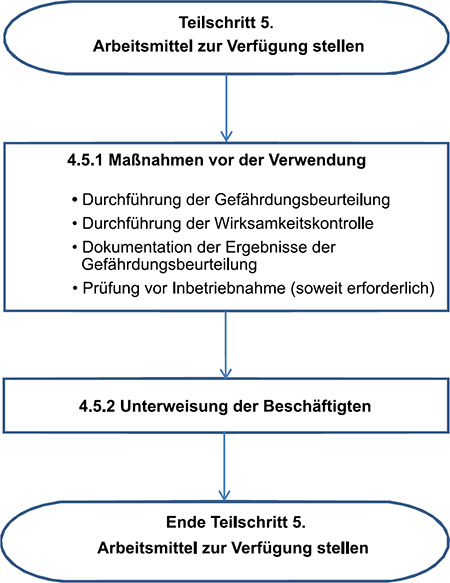

4 Schritte des Beschaffungsprozesses
(1) Der Prozess der Beschaffung sicherer und geeigneter Arbeitsmittel lässt sich in fünf Teilschritte einteilen:
- Ermitteln des Bedarfs und Festlegen der Anforderungen
- Auswahl des Arbeitsmittels und des Auftragnehmers
- Erteilen des Auftrags
- Lieferung des Arbeitsmittels und ggf. Montage des Arbeitsmittels
- Zur Verfügung stellen des Arbeitsmittels zur Verwendung
Eine Übersichtsdarstellung des Beschaffungsprozesses enthält Abbildung 1.

Abb. 1 Übersichtsdarstellung des Beschaffungsprozesses
4.1 Teilschritt 1: Bedarf ermitteln und Anforderungen festlegen
Der Teilschritt 1 lässt sich in folgende Unterschritte gliedern (vgl. Abbildung 2):
4.1.1 Beteiligte festlegen
Im ersten Schritt wird festgelegt, wer bei der Beschaffung beteiligt wird (z. B. Personen mit besonderem Fachwissen, Beschäftigte, die das Arbeitsmittel verwenden). Die Regelungen zur Beteiligung der Fachkraft für Arbeitssicherheit, des Betriebsarztes und des Betriebsrates sind im Beschaffungsprozess zu beachten. Kriterien für die Auswahl des zu beteiligenden Personenkreises sind z. B.:
- Komplexität des Arbeitsmittels,
- Bedeutung des Arbeitsmittels für die Produktion, (Integration des Arbeitsmittels in die betriebliche Infrastruktur),
- Bedeutung der Beschaffung für den Arbeitsschutz,
- Art und Häufigkeit der Verwendung,
- Art und Umfang der auftretenden Gefährdungen,
- Häufigkeit der Beschaffung,
- Ablauf des Beschaffungsvorganges.
4.1.2 Informationsrecherche und -ermittlung durch den Arbeitgeber
Der Umfang der Informationsrecherche und -ermittlung durch den Arbeitgeber richtet sich danach, in welcher Tiefe die nachfolgenden Punkte abhängig von der Komplexität des zu beschaffenden Arbeitsmittels und dessen Verwendung zu ermitteln sind.
- Ermitteln und Festlegen der Arbeitsaufgaben
Um die notwendigen Informationen zur Festlegung der Anforderungen an ein zu beschaffendes Arbeitsmittel einholen zu können, empfiehlt sich, möglichst genau festzulegen bzw. zu beschreiben, welche Arbeitsaufgaben mit dem Arbeitsmittel durchgeführt werden sollen und an welchen Orten und Arbeitsplätzen es zum Einsatz kommt.
- Ermitteln der Umgebungsbedingungen
Die Umgebungsbedingungen am Arbeitsplatz (z. B. Baustelle, wechselnde Einsatzorte, eingeschränkter Bewegungsraum, Spritzwasser, korrosive Umgebung, Vibrationen, Zugangsmöglichkeiten, Temperatur, Lärm, Transportbedarf, Wetterbedingungen, Naturereignisse) müssen ermittelt und festgelegt werden. Dazu gehört auch die Ermittlung, wie die Umgebungsbedingungen durch das Arbeitsmittel selbst beeinflusst werden (z. B. Staub, Lärm, Hitze, explosionsfähige Atmosphäre,) und welche möglichen Wechselwirkungen zu erwarten sind.
- Aufstellungsbedingungen und Anforderungen
Erforderlichenfalls sind Aufstellungsbedingungen (z. B. auch Platzbedarf für Wartungs- oder Instandhaltungsarbeiten) und Anforderungen für stationär betriebene Arbeitsmittel oder Produktionsanlagen z. B. auch hinsichtlich Erdbebengebiet, Überschwemmungsgebiet zu klären. Unter Umständen müssen z. B. Bau- oder Stahlbauarbeiten für Fundamente, Untergründe, Einbaugerüste sowie Zugänge für die Anlieferung vorgesehen werden.
- Ggf. erforderliche Anschlüsse und Infrastruktur zur Stromversorgung und Versorgung mit Hilfsmedien/Medien (z. B. Wasser/Kühlwasser, Dampf, Druckluft, Stickstoff/Inertgas, Brenngas).
- Prozessbedingungen (z. B. bei verfahrenstechnischen Anlagen)
Es ist zu ermitteln, welche Betriebs- und Verfahrensparameter auch an den Schnittstellen zu vorhandenen Arbeitsmitteln zu berücksichtigen sind.
- Sicherheits- und Gesundheitsschutzanforderungen z. B. ergonomische Anforderungen, Schnittstelle Mensch – Arbeitsmittel (siehe dazu TRBS 1151), Zugänge, Sicherheitsabstände, Vorgehen bei Störungsbeseitigung, Brandschutzkonzept, Explosionsschutzkonzept, Schutzmaßnahmen gegen Fehlbedienung sowie unbefugte Benutzung bzw. gegen unbefugte Eingriffe (vgl. Schutzkonzept TRBS 1111 sowie EmpfBS 1115 "Cyber Security").
- Verfügbare und erforderliche Kompetenz/Qualifikation der eigenen Beschäftigten und ggf. von involvierten Beschäftigten anderer Arbeitgeber, personelle Ressourcen.
Für die Tätigkeiten können bei bestimmten Arbeitsmitteln zusätzliche Qualifikationen/Einweisungen der Beschäftigten erforderlich sein, z. B. für die beauftragte Person nach § 12 Absatz 3 BetrSichV. Diese Kompetenzen sowie die personellen Ressourcen müssen rechtzeitig ermittelt und die diesbezüglichen notwendigen Qualifizierungsmaßnahmen durchgeführt werden. Diese Maßnahmen müssen spätestens zur Inbetriebnahme abgeschlossen sein.
- Instandhaltungsanforderungen (z. B. mit Auswirkung auf Prüffristen, Wartungsintervalle, erforderliche Hilfsmittel und Transport von Werkzeugen und Teilen)
Für die Instandhaltung von Arbeitsmitteln können bestimmte zusätzliche technische Einrichtungen notwendig sein (Zugänge, Hebehilfsmittel, Absperreinrichtungen etc.). Die Realisierung dieser Maßnahmen muss im Zuge der Planung mit betrachtet werden.
- Umfang von Lieferungen, Teillieferungen und -aufträgen (auch Planungsdienstleistungen, Fertigung, Montage, erforderliche Bauarbeiten)
Bei Arbeitsmitteln, die der Arbeitgeber für die Verwendung in seinem Betrieb einzeln spezifizieren oder für die er selbst Bauteile, Komponenten oder Sicherheitseinrichtungen beistellen möchte, empfiehlt es sich, vertraglich festzulegen, wer die Herstellerverantwortung für das verwendungsfertige Arbeitsmittel übernimmt. Die Spezifikation der Kundenbeistellung sollte zwischen Arbeitgeber und Auftragnehmer abgestimmt werden.
Beispiel:
Ein Auftragnehmer liefert eine unvollständige Maschine und der Arbeitgeber stellt den Antrieb bei. Die unvollständige Maschine darf in beiden nachstehenden Fällen erst in Betrieb genommen werden, nachdem ein Konformitätsbewertungsverfahren für die vollständige Maschine durchgeführt, eine EU-Konformitätserklärung und eine Betriebsanleitung für die vollständige Maschine erstellt und die CE-Kennzeichnung angebracht wurde.
Fall a) Wenn der Auftragnehmer die Verantwortung für das verwendungsfertige Arbeitsmittel übernimmt, muss der Arbeitgeber für die von ihm beigestellten Teile ggf. Vorgaben des Auftragnehmers berücksichtigen, damit dieser die Anforderungen der für sie geltenden Harmonisierungsrechtsvorschriften erfüllen kann.
Fall b) Wenn der Arbeitgeber die Herstellerpflichten für das verwendungsfertige Arbeitsmittel selbst wahrnimmt, wird empfohlen, privatrechtlich zu vereinbaren, dass der Auftragnehmer eine Einbauerklärung zur Verfügung stellt, aus der sich über die Anforderungen der MRL hinaus nicht nur ergibt, welche Anforderungen des Anhangs I der MRL bereits erfüllt sind, sondern auch, welche nicht erfüllt bzw. nicht zutreffend sind. Dies würde dem Arbeitgeber die Überprüfung erleichtern, welche Anforderungen der MRL im Zuge des Konformitätsbewertungsverfahrens für die vollständige Maschine noch erfüllt werden müssen. Ein Beispiel ist im Anhang dieser Empfehlung abgedruckt.
In beiden Fällen sollten die Verantwortlichkeiten zwischen Arbeitgeber und Auftragnehmer vertraglich eindeutig geregelt werden, insbesondere auch, wer welche notwendigen Nachweise zur Verfügung stellt. Dabei geht es nicht nur um die Erfüllung der Anforderungen der geltenden Harmonisierungsrechtsvorschriften zur CE-Kennzeichnung (z. B. Konformitätserklärungen, Einbauerklärungen, Montageanleitungen, Betriebsanleitungen), sondern auch um die Erfüllung weiterer Rechtsvorschriften zum Sicherheits- und Gesundheitsschutz, die weitere Dokumente zum sicheren Betrieb erfordern (weitere Informationen, die für die Gefährdungsbeurteilung und den sicheren Betrieb erforderlich sind, z. B. Schnittstellenbeschreibungen, Funktionsbeschreibungen).
- Hinweise von Beschäftigten, die die Arbeitsmittel verwenden
Im Kreis der Beschäftigten liegen üblicherweise umfangreiche Praxiserfahrungen vor. Daher empfiehlt es sich, diese in die Planung und die Festlegung von Gebrauchstauglichkeit, Ergonomie und Schutzmaßnahmen mit ihrem Erfahrungswissen einzubinden.
- Informationsquellen (z. B. Branchenstandards, Normen, Warentests, Fachartikel, Empfehlungen von gleichartigen Unternehmen)
Für Arbeitsmittel, die verwendungsfertig beschafft werden ("Katalogware") kommen als Informationsquellen Kataloge, Betriebsanleitungen des Herstellers, Informationen über optionale Ausstattungsvarianten sowie Berichte über die Ergebnisse von Tests und Erfahrungsberichte von Anwendern und Prüflabors in Frage.
Für Arbeitsmittel, die nicht verwendungsfertig beschafft werden, kommen insbesondere Normen und Branchenstandards in Frage.
- Rechtliche Anforderungen an das Arbeitsmittel (z. B. CE-Kennzeichnung, Konformitätserklärung/Konformitätsnachweis, anzuwendende Gesetze, Verordnungen, ggf. Unfallverhütungsvorschriften), die berücksichtigt werden müssen.
Die rechtlichen Anforderungen an das Bereitstellen auf dem Markt von Arbeitsmittel ergeben sich unmittelbar aus den für sie geltenden Rechtsvorschriften. Zu diesen Rechtsvorschriften gehören insbesondere EU-Verordnungen und Rechtsvorschriften, mit denen EU-Richtlinien in deutsches Recht umgesetzt werden. (z. B. ProdSV). Diese beinhalten nicht alle betriebsspezifischen Anforderungen. Folglich müssen diese Anforderungen für die vorgesehene Verwendung des Arbeitsmittels vom Arbeitgeber im Auftrag an den Auftragnehmer konkret beschrieben werden. Neben technischen Anforderungen sind auch formale Anforderungen möglich. Für den Betrieb überwachungsbedürftiger Anlagen ist im Einzelfall zu prüfen, ob nach § 18 BetrSichV eine Erlaubnispflicht besteht. Zudem können sich auch Anforderungen sowie Genehmigungs- und Erlaubnispflichten aus anderen Rechtsbereichen ergeben, wie z. B. aus dem Baurecht, dem Umweltrecht, aber auch aus den nationalen Arbeitsschutzbestimmungen (z. B. Anforderungen an die Arbeitsstätte, an die Ableitung von Abluft, an die Feuerwiderstandsdauer, an den Schallschutz, an Fundamente etc.).
- Bedingungen für die Außerbetriebnahme
Vom Arbeitgeber ist zu ermitteln, unter welchen Bedingungen das Arbeitsmittel außer Betrieb gesetzt werden kann, wie das Arbeitsmittel vom Arbeitsplatz entfernt werden kann und welche Möglichkeiten es für den weiteren Verbleib des Arbeitsmittels (z. B. Überlassung in die Verantwortung anderer Personen, Entsorgung) gibt.
4.1.3 Gefährdungen beurteilen und Anforderungen für die Beschaffung festlegen
Auf der Grundlage der vorliegenden Informationen aus Abschnitt 4.1.2 sind die auftretenden Gefährdungen zu beurteilen (siehe dazu TRBS 1111). Daraus ist abzuleiten, welche Schutzmaßnahmen erforderlich sind, damit die Verwendung der Arbeitsmittel nach dem Stand der Technik sicher ist.
4.1.4 Anforderungen festlegen (z. B. Bestellspezifikation, Lastenheft)
(1) Auf der Grundlage der vorliegenden Informationen aus Abschnitt 4.1.2 und 4.1.3 sind die Anforderungen an das zu beschaffende Arbeitsmittel unter Berücksichtigung der betrieblichen Belange festzulegen. In einfachen Fällen ("Katalogware") ist eine angemessene Präzisierung der Bestellung unter Berücksichtigung von relevanten Ausstattungsoptionen ausreichend.
(2) Für Einzelanfragen werden entsprechende Anforderungen z. B. in Bestellspezifikationen oder Lastenheften festgelegt, anhand derer die Auftragnehmer ihre Produkte unter Berücksichtigung der rechtlichen Anforderungen herstellen können und die Planungs-, Beschaffungs-, Montage-, Bau- und anderen Ingenieur-Dienstleistungen vergeben werden.
Eine Darstellung des Teilschritts 1 enthält die Abbildung 2.

Abb. 2 Teilschritt 1 – Bedarf ermitteln und Anforderungen festlegen
4.2 Teilschritt 2: Arbeitsmittel und Auftragnehmer auswählen
4.2.1 Beschaffungsmarkt analysieren
Die Analyse des Beschaffungsmarktes ist grundsätzlich unabhängig davon, ob es sich um die Beschaffung von Katalogware oder spezifisch anzufertigenden Arbeitsmittel handelt. Sie dient zunächst dazu, das geeignete Arbeitsmittel und potenzielle Auftragnehmer zu identifizieren. Sie kann gleichzeitig eine Innovationsfunktion übernehmen, indem Informationen über neue Entwicklungen u. a. hinsichtlich Funktionalität, Sicherheit und Ergonomie bei Produkten für die anstehende Arbeitsaufgabe gewonnen werden.
4.2.2 Marktinformationen mit Anforderungen abgleichen
Die Marktinformationen können eine Überarbeitung der Anforderungen nach 4.1.4 erforderlich machen. Dies ist z. B. der Fall, wenn bei der Marktanalyse deutlich wird, dass keine Arbeitsmittel mit den geforderten Anforderungen zur Verfügung stehen oder relevante Anforderungen noch zu berücksichtigen sind.
4.2.3 Angebote einholen
Auf die Analyse des Beschaffungsmarkts folgt die Angebotseinholung/Ausschreibung auf der Grundlage der in Teilschritt 1 erstellten Anforderungsliste.
4.2.4 Angebote mit den Anforderungen abgleichen
(1) Die angebotenen Arbeitsmittel und Leistungen werden analysiert und mit den Anforderungen abgeglichen. Unterschiede in den Angeboten werden herausgearbeitet und bewertet. Dies gilt insbesondere auch im Hinblick auf die Anforderungen in Bezug auf den Sicherheits- und Gesundheitsschutz.
(2) Bei der Beurteilung der Angebote können Hinweise auf anerkannte Drittprüfungen (z. B. Prüfzeichen wie das GS-Zeichen) eine gute Hilfestellung bieten.
(3) Für die Angebotsbewertung können folgende Informationen herangezogen werden:
- das Angebot mit der Beschreibung des Arbeitsmittels einschließlich technischer Informationen sowie der Liefer- und Leistungsumfänge;
- die Betriebsanleitung (sofern verfügbar), insbesondere mit Hinweisen zur bestimmungsgemäßen Verwendung, zu Emissionen, zur Instandhaltung, zu erforderlichen und empfohlenen Prüfungen, zur Montage, zum Verhalten bei vorhersehbaren Störungen, zu bestehenden Restrisiken, zur Außerbetriebsetzung und zum Entsorgen der Arbeitsmittel;
- die EU-Konformitätserklärung bei Arbeitsmitteln, sofern nach EU-Recht eine solche Erklärung für das Produkt ausgestellt und übermittelt werden muss;
- ggf. Angabe zu angewandten Normen;
- Verkaufsprospekte, Kataloge;
- Erfahrungen aus der Branche.
4.2.5 Arbeitsmittel und Auftragnehmer auswählen
Auf Basis des unter 4.2.4 durchgeführten Angebotsvergleichs können Arbeitsmittel und Auftragnehmer ausgewählt werden.
Eine Darstellung des Teilschritts 2 enthält die Abbildung 3.

Abb. 3 Teilschritt 2 – Arbeitsmittel und Auftragnehmer auswählen
4.3 Teilschritt 3: Auftrag erteilen
4.3.1 Liefer- und Leistungsumfänge festlegen
(1) Bei der Erteilung des Auftrags zur Lieferung eines Arbeitsmittels und damit ggf. verbundener Leistungen wird geprüft, welche Liefer- und Leistungsumfänge mit dem bzw. den Auftragnehmern festzulegen sind.
(2) Der zu vereinbarende Liefer- und Leistungsumfang wird mit der Anforderungsliste abgeglichen. Zusätzliche Festlegungen – vorzugsweise in schriftlicher Form – können erforderlich sein z. B. im Hinblick auf:
- Verantwortlichkeiten, insbesondere für die Montage bei nicht verwendungsfertig gelieferten Arbeitsmitten,
- ggf. Koordination der Arbeiten,
- Planungsleistungen,
- Schutzkonzepte verschiedener Ausstattungsvarianten – auch bei Katalogware,
- Terminplan,
- Entgegennahme der Lieferung: Ort, Zeit, Transportmittel, Krane/Hebezeuge, vorzuhaltendes Personal,
- Umfang, Form und Übergabezeitpunkt der Dokumentation (z. B. Betriebsanleitung, Stücklisten, Zeichnungen, Konformitätserklärungen),
- Montage, Aufstellung, Anschluss,
- Einbindung in bestehende Anlagen, Schnittstellen zu anderen Arbeitsmitteln,
- erforderliche Sicherheitskennzeichnung am Einsatzort,
- Durchführung von Prüfungen, Probebetrieb oder Abnahme ggf. beim Auftragnehmer,
- Qualifizierung der Beschäftigten, die das Arbeitsmittel verwenden, Umfang von Schulungen und Unterweisungen,
- Ersatzteile, Wartung, Instandhaltung.
4.3.2 Auftrag erteilen
(1) Es empfiehlt sich, den jeweiligen Liefer-/Leistungsumfang als Bestandteil der Bestellung schriftlich festzuhalten. Weiterhin empfiehlt es sich, die Herstellerverantwortung (z. B. EU-Konformitätserklärung, Kennzeichnung (CE-Kennzeichnung, "Typenschild"), Betriebsanleitung) und den Zeitpunkt des Verantwortungsübergangs vom Auftragnehmer auf den Arbeitgeber im Vorfeld eindeutig zu vereinbaren. Dies gilt insbesondere bei der Montage von Arbeitsmitteln am Verwendungsort.
(2) Arbeiten Beschäftigte des Arbeitgebers und von Auftragnehmern bei der Montage und Inbetriebsetzung eines Arbeitsmittels am Verwendungsort zusammen, sind die Vertragspartner gemäß § 13 BetrSichV verpflichtet, die für die Sicherheit und den Gesundheitsschutz der Beschäftigten notwendigen Schutzmaßnahmen zu koordinieren (nähere Informationen siehe TRBS 1111).
(3) Weiterhin hat der Arbeitgeber dem Auftragnehmer schriftlich aufzugeben, bei der Lieferung von Arbeitsmitteln, Ausrüstungen oder Arbeitsstoffen die für Sicherheit und Gesundheitsschutz einschlägigen Anforderungen im Rahmen seines Auftrags einzuhalten (vgl. auch § 5 DGUV Vorschrift 1).
Eine Darstellung des Teilschritts 3 enthält die Abbildung 4.

Abb. 4 Teilschritt 3 – Auftrag erteilen
4.4 Teilschritt 4: Lieferung des Arbeitsmittels
4.4.1 Eingangskontrolle
(1) Mit einer Eingangskontrolle stellt der Arbeitgeber sicher, dass die bestellten Produkte vollständig, entsprechend den Vorgaben der Bestellung und mängelfrei geliefert wurden (formaler Vergleich Bestellung – Auslieferung).
(2) Sollten bei der Eingangskontrolle sicherheitsrelevante Mängel festgestellt werden, darf das Arbeitsmittel nicht verwendet werden (siehe § 5 Absatz 2 BetrSichV). Maßnahmen zur Mängelrüge und Mängelbeseitigung werden in der vorliegenden Empfehlung nicht weiter behandelt (siehe hierzu, bei grenzüberschreitenden Beschaffungen, auch Artikel 38 und 39 UN-Kaufrecht, § 377 Absatz 1 HGB).
4.4.2 Montage am Verwendungsort
(1) Bei Arbeitsmitteln, die am Verwendungsort montiert werden, empfiehlt es sich für den Arbeitgeber, die Verantwortlichkeiten vertraglich eindeutig zu regeln. Bei der Montage am Verwendungsort sind mehrere Varianten möglich, z. B.:
- Das Arbeitsmittel wird verwendungsfertig geliefert und vom Arbeitgeber unter Beachtung der Hinweise in der Betriebsanleitung des Auftragnehmers montiert, aufgestellt oder angebracht (insbesondere bei "Katalogware").
- Das Arbeitsmittel wird am Verwendungsort in der Verantwortung des Auftragnehmers von dessen Beschäftigten montiert, aufgestellt oder angebracht.
- Das Arbeitsmittel wird am Verwendungsort in der Verantwortung und unter Anleitung des Auftragnehmers von Beschäftigten des Arbeitgebers montiert, aufgestellt oder angebracht.
(2) Bei Arbeitsmitteln, die am Verwendungsort montiert werden, ist nach Abschluss der Montage, der mechanischen Fertigstellung und nach Herstellung der Betriebsbereitschaft aller Systeme und Hilfssysteme zu überprüfen, ob alle notwendigen Arbeiten und Leistungen erbracht wurden und alle Bestandteile des Arbeitsmittels einschließlich der Schutz- und Sicherheitseinrichtungen entsprechend den Vorgaben der Bestellung ausgeführt, eingebaut und betriebsbereit sind sowie die Dokumentation vorhanden ist.
(3) Für die Aufstellung eines Arbeitsmittels am Verwendungsort hat der Arbeitgeber dafür zu sorgen, dass alle notwendigen Voraussetzungen im Hinblick auf die spätere sichere Verwendung des Arbeitsmittels vorhanden sind. Solche Voraussetzungen sind z. B. Bau, Stahlbau, Fundamente, Zugänglichkeit, Zugang, Sicherheitsabstände, sichere Zuführung von Energien und Medien an die Liefergrenzen.
4.4.3 Probebetrieb
Vor Auslieferung eines Arbeitsmittels oder nach der Montage am Verwendungsort empfiehlt sich bei komplexen Arbeitsmitteln, einen Probebetrieb durch den Auftragnehmer zu vereinbaren.
4.4.4 Verantwortungsübergang
(1) Mit der Abnahme erkennt der Arbeitgeber an, dass der Auftragnehmer die vertraglich festgelegten Lieferungen und Leistungen erbracht hat. Damit geht die Verantwortung für die sichere Verwendung des Arbeitsmittels auf den Arbeitgeber über.
Hinweis:
Nimmt der Arbeitgeber ein Arbeitsmittel ohne formelle Abnahme in Betrieb, könnte nach den Grundsätzen des Privatrechts dennoch eine (faktische) Abnahme erfolgt sein, weil durch jedwede Verwendung eine Verantwortungsübernahme für das Arbeitsmittel erfolgt.
Eine Darstellung des Teilschritts 4 enthält die Abbildung 5.

Abb. 5 Teilschritt 4 – Lieferung des Arbeitsmittels
4.5 Teilschritt 5: Arbeitsmittel zur Verfügung stellen
4.5.1 Maßnahmen vor der Verwendung (Gefährdungsbeurteilung, Dokumentation, Schutzmaßnahmen, Prüfung)
(1) Der Arbeitgeber hat vor der Verwendung von Arbeitsmitteln die auftretenden Gefährdungen zu beurteilen (Gefährdungsbeurteilung) und daraus notwendige und geeignete Schutzmaßnahmen abzuleiten und zu treffen. Bevor der Arbeitgeber Arbeitsmittel verwenden lässt, muss er sich davon überzeugen, dass die Verwendung nach dem Stand der Technik sicher ist. Hierbei erfolgt ein Abgleich, ob die in der Gefährdungsbeurteilung festgelegten Schutzmaßnahmen vollständig und richtig umgesetzt wurden. Die Schutzmaßnahmen umfassen sowohl die Schutzmaßnahmen für das Arbeitsmittel als auch die für die betriebliche Verwendung.
(2) Mit der vollständigen Umsetzung der vor der erstmaligen Verwendung erforderlichen Maßnahmen ist die Gefährdungsbeurteilung für die Verwendung dieses Arbeitsmittels abgeschlossen.
(3) Vor der erstmaligen Verwendung der Arbeitsmittel hat der Arbeitgeber die Wirksamkeit der Schutzmaßnahmen zu überprüfen, erforderliche Festlegungen zur Wartung, Instandhaltung und Prüfungen zu treffen. Die Überprüfung der Wirksamkeit von Schutzmaßnahmen ist nicht erforderlich, soweit diese bereits durch entsprechende Prüfungen nach § 14 oder § 15 BetrSichV abgedeckt wurden.
(4) Das Ergebnis der Gefährdungsbeurteilung ist zu dokumentieren (siehe TRBS 1111). Die Gefährdungsbeurteilung muss regelmäßig überprüft werden, damit sichergestellt wird, dass das Arbeitsmittel während der gesamten Verwendungsdauer nach dem Stand der Technik sicher verwendet werden kann (vgl. EmpfBS 1114).
(5) Für folgende Arbeitsmittel hat der Arbeitgeber nach der Montage und vor der ersten Inbetriebnahme eine Prüfung durch eine zur Prüfung befähigte Person oder, soweit vorgeschrieben, eine zugelassene Überwachungsstelle (ZÜS) zu veranlassen:
- Arbeitsmittel, deren Sicherheit von den Montagebedingungen abhängt (§ 14 BetrSichV),
- überwachungsbedürftige Anlagen (§ 15 in Verbindung mit Anhang 2 BetrSichV),
- bestimmte Arbeitsmittel (§ 14 in Verbindung mit Anhang 3 BetrSichV).
Diese Prüfung hat den Zweck, sich von der ordnungsgemäßen Montage und Installation, dem ordnungsgemäßen Zustand und der sicheren Funktion der Arbeitsmittel zu überzeugen. Prüfinhalte, die im Rahmen eines Konformitätsbewertungsverfahrens geprüft und dokumentiert wurden, müssen nicht erneut geprüft werden.
4.5.2 Unterweisung der Beschäftigten
Vor der Verwendung eines Arbeitsmittels im Betrieb sind alle nach der BetrSichV erforderlichen Betriebsanweisungen zu erstellen und die Beschäftigten zu unterweisen (§ 12 BetrSichV).
Eine Darstellung des Teilschritts 4 enthält die Abbildung 6.

Abb. 6 Teilschritt 5 – Arbeitsmittel zur Verfügung stellen